| Auteurs | Joan Carpentier · Aaron Tiavinjanahary |
| Formateur | Alimou Diallo — Sup de Vinci Rennes |
| Dates | 9 et 10 novembre 2026 |
| Dépôt du code | https://github.com/AaronTia/souverainrecrut.git (branche Dev) |
| Dépôt de déploiement | https://gitlab.com/WakakiVongola/souverainrecrut-deploy.git |
SouverainRecrut est une API de gestion de recrutement. Chaque modification du code est testée, analysée, packagée puis déployée sur un serveur. Une personne approuve la mise en production, et tout peut revenir en arrière en quelques minutes.
| Vous cherchez… | La réponse | Où la trouver |
|---|---|---|
| L'application tourne-t-elle ? | Oui : API en ligne, base connectée, pipeline GitLab vert. | Figure 24 · Figure 27 |
| Le code est-il de qualité ? | 151 tests, 99,4 % de couverture, Quality Gate « Passed ». | § 4.2 · Figure 9 |
| Est-ce sécurisé ? | Scan d'image : 0 vulnérabilité critique ; secrets hors dépôt ; mise en production approuvée. | § 4.3 · § 9 |
| Ce qui est déployé est-il ce qui a été testé ? | Oui : même empreinte (digest) de Jenkins à la production. | § 8 · Figure 30 |
| Peut-on revenir en arrière ? | Oui, testé sur trois versions, données conservées. | § 7.2 · Figure 28 |
| Comment déployer ? | Terraform contrôle le serveur, Ansible le configure, GitLab déploie après approbation. | § 5 et § 6 · deploiement/README.md |
| Ce qui manque ou reste limité ? | SBOM, signature d'image, tests de charge, environnement de préproduction. | § 14 |
| Qui a réalisé le projet ? | Joan Carpentier et Aaron Tiavinjanahary. | page de garde |
SouverainRecrut est une application de gestion de recrutement. Ce rapport décrit la chaîne qui mène, sans autre intervention humaine qu'une approbation, d'un commit sur GitHub à une API en ligne sur un serveur Ubuntu, avec tests, analyse qualité, scan de sécurité, image versionnée, déploiement et retour arrière. Périmètre : le backend uniquement.
| Exigence | Résultat | Preuve |
|---|---|---|
| Tests backend + rapport de couverture exploitable | ✅ 151 tests, 99,4 % des lignes | Figure 8, Figure 10 |
| SonarQube et Quality Gate PASSED | ✅ Passed, 0 duplication | Figure 9 |
| Jenkinsfile : checkout → tests → Sonar → image → Trivy → push | ✅ builds #9 à #14 verts | Figure 5, Figure 7 |
| Image Docker taguée, scannée et publiée | ✅ 1.0.0-723d0f4 | Figure 11, Figure 12 |
| VM Ubuntu configurée par Ansible | ✅ Docker, Compose, pare-feu, runner | Figure 17 |
| Terraform | ✅ avec adaptation (pas d'ESXi) | Figure 16 |
| Déploiement Compose + PostgreSQL depuis Docker Hub | ✅ API joignable, données persistantes | Figure 27 |
| Pipeline GitLab avec approbation manuelle | ✅ validate → deploy (approuvé) → smoke-test | Figure 24, Figure 25 |
| Rollback documenté et testé | ✅ 723d0f4 → 12a585b → 723d0f4 | Figure 28, Figure 29 |
| Traçabilité et reproductibilité | ✅ digest identique Jenkins ↔ production | Figure 30 |
| Options du cours : SBOM, signature d'image | ❌ non réalisées | § 14 |
sha256:0b9848d0… est identique aux deux extrémités (Figure 30). Le déploiement est approuvé par un humain, tracé par GitLab, et réversible en quelques minutes.Le cahier des charges demande une chaîne automatisée, reproductible, sécurisée, traçable et documentée, et pas seulement une API qui fonctionne. Le tableau ci-dessous relie chaque exigence qualité (cahier § 7) à ce qui a été réalisé.
| Exigence | Ce qui a été fait | Où le vérifier |
|---|---|---|
| Reproductibilité | Tout est en code : Jenkinsfile, Dockerfile, Ansible, Terraform, Compose, .gitlab-ci.yml | Annexe B |
| Qualité logicielle | Jest, couverture, SonarQube avec Quality Gate bloquant | § 4.2 |
| Sécurité | Scan Trivy bloquant, image non-root, secrets hors dépôt, pare-feu | § 4.3, § 9 |
| Traçabilité | Tag version-sha relié au commit, digest vérifié en production | § 8 |
| Déploiement | Le serveur tire l'image publiée ; elle n'est jamais reconstruite | § 5, § 6 |
| Continuité | Rollback testé, limites sur les migrations documentées | § 7 |
| Documentation | README du pipeline, runbook de 11 incidents, procédures, ce rapport | Annexe A |
Le cours distingue trois notions. La chaîne réalisée est en livraison continue : l'artefact est toujours prêt à être déployé, et une porte humaine (l'approbation manuelle exigée par le cahier) précède la production.
La progression suivie reprend celle du cours : comprendre en manuel, reproduire par script, puis industrialiser par un pipeline. Chaque étape a été exécutée à la main avant d'être automatisée, ce qui a permis de repérer les pannes tôt.
La chaîne est en deux parties. Le Jour 1 produit une image fiable ; le Jour 2 la déploie sur un serveur. Le seul lien entre les deux est le tag de l'image, validé avant tout déploiement.
| Outil | Rôle | Pourquoi ce choix |
|---|---|---|
| GitHub | Dépôt du code (fork, branche Dev) | imposé par le cahier ; scruté par Jenkins |
| Jenkins | Orchestre build, tests, qualité, image, scan, publication | pipeline as code (Jenkinsfile) |
| SonarQube | Analyse statique et Quality Gate | barrière automatique avant tout artefact |
| Trivy | Scan des vulnérabilités de l'image | bloque la publication d'une image dangereuse |
| Docker Hub | Registre : image version-sha7 | l'artefact testé est celui déployé |
| Terraform | Contrôle du serveur, génération de l'inventaire | infrastructure décrite en code, rejouable |
| Ansible | Installe Docker, Compose, pare-feu, runner | idempotent, sans agent |
| GitLab CI/CD | Déploie, approbation manuelle, rollback | imposé par le cahier ; projet séparé du code |
| Docker Compose | Orchestre backend et PostgreSQL | volume persistant, healthchecks, redémarrage auto |
Le Jenkinsfile versionné avec le code définit dix étapes. Quatre d'entre elles sont des portes : si l'une échoue, la suite n'est pas exécutée et aucune image n'est publiée. Jenkins interroge GitHub toutes les 5 minutes (Poll SCM) car il tourne en local et GitHub ne peut pas le joindre par webhook.
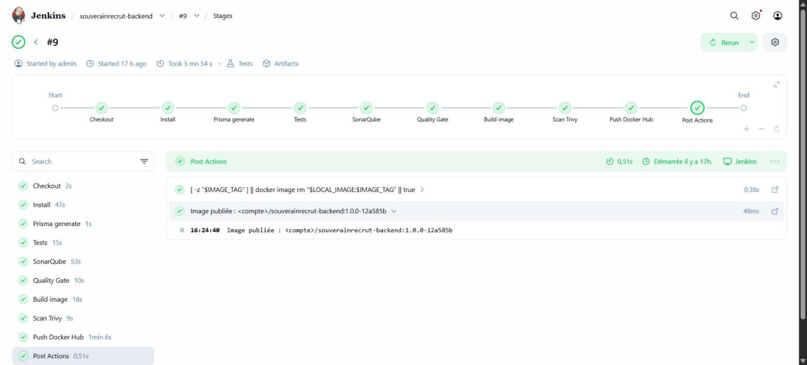
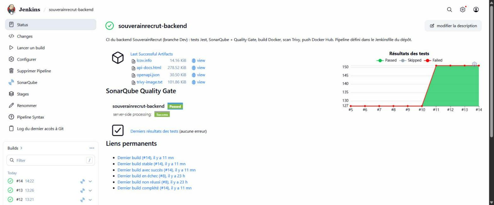
La suite de tests contient aujourd'hui 18 suites et 151 tests : unitaires, d'intégration HTTP (supertest), configuration Jest et couverture.
Modifications apportées à la suite. Retrait des tests qui recopiaient l'implémentation (appels Prisma figés) ou ne vérifiaient qu'un typeof, ajout de tests de sécurité réels (jeton forgé, jeton expiré, algorithme none, injection de champs), des tests CORS, un test de contrat entre la documentation OpenAPI et les routes, et des tests it.failing qui documentent les défauts du code de référence (§ 10).
| Mesure | Valeur | Seuil exigé par le pipeline |
|---|---|---|
| Tests | 151 passés, 18 suites | tout doit passer |
| Couverture globale (lignes, mesurée par Jest) | 99,4 % | ≥ 90 % |
| Couverture SonarQube (lignes + branches) | 95,8 % | indicateur, non bloquant |
| Couverture des middlewares et validateurs (sécurité) | 100 % | 100 % |
| SonarQube : duplications / hotspots | 0,0 % / 0 | Quality Gate « Passed » |
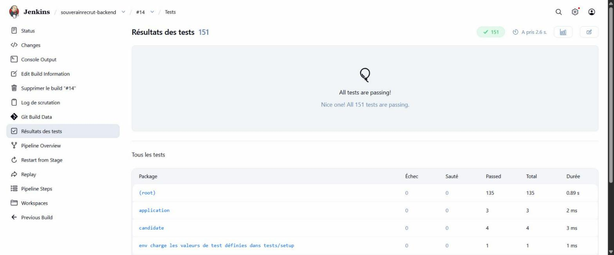
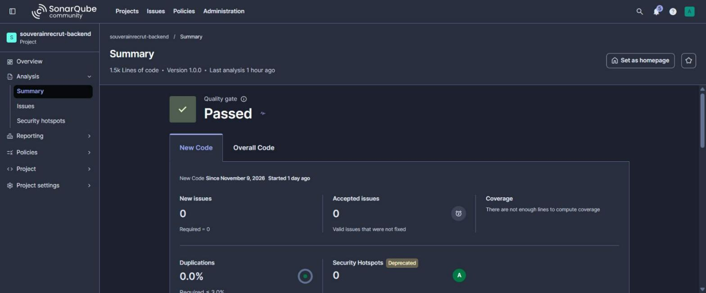
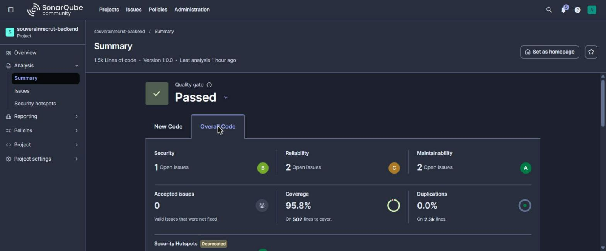
Le Dockerfile a été durci en réponse au scan Trivy, qui a bloqué deux publications avant d'être satisfait : une dépendance d'Express (proxy-addr) et le module tar embarqué dans le npm de l'image de base. La seconde faille ne venait pas du projet : elle a disparu en supprimant npm de l'image finale.
| Point | Avant | Après |
|---|---|---|
| Image de base | node:20-alpine | node:22-alpine (version exigée par le projet) |
| Construction | une seule étape | multi-stage : outils de build absents de l'image finale |
| Outils embarqués | npm, npx, yarn, corepack | supprimés (l'API s'exécute avec node seul) |
| Utilisateur | root | node (non privilégié) |
| Dépendances | développement incluses | production uniquement (npm ci --omit=dev) |
| Résultat Trivy | 2 CRITICAL → publication bloquée | 0 CRITICAL, 16 HIGH reportées dans le rapport archivé |
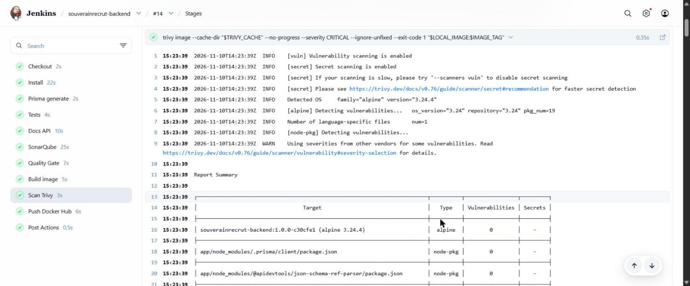
--severity CRITICAL --ignore-unfixed --exit-code 1) : 0 vulnérabilité sur l'image Alpine et ses dépendances, donc la publication est autorisée.L'image est publiée avec un tag explicite version-sha7 (jamais latest). Les identifiants (jeton SonarQube, accès Docker Hub) sont des credentials Jenkins : ils n'apparaissent ni dans le dépôt ni dans les logs.
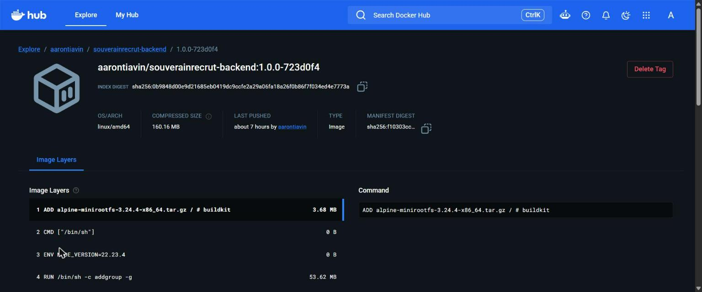
1.0.0-723d0f4 (la version en production) : son index digest sha256:0b9848d0…7773a est celui affiché par Jenkins au push et par la VM au déploiement.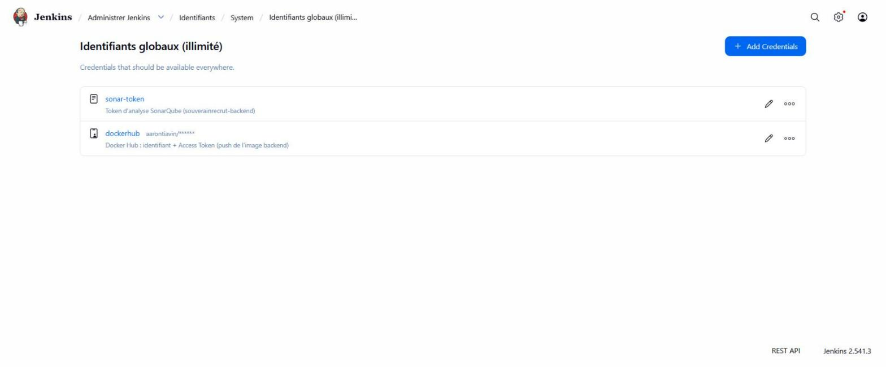
aarontiavin/******).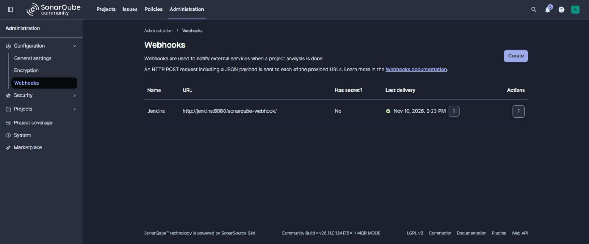
Une étape dédiée exporte la spécification OpenAPI depuis le code puis la rend en HTML avec Redocly. La documentation est donc toujours synchrone avec l'API publiée ; un test de contrat vérifie aussi que chaque route documentée existe réellement.
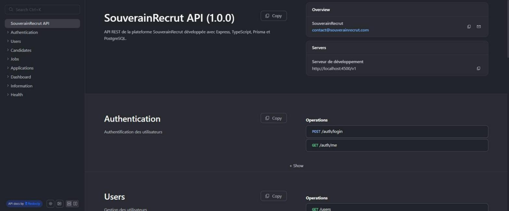
| Caractéristique | Valeur |
|---|---|
| Système | Ubuntu Server 22.04.5 LTS (le cahier indique 24.04 : sans incidence ici) |
| Ressources | 2 vCPU, 3,8 Go de RAM, 29 Go de disque |
| Réseau | NAT VMware, adresse 192.168.139.128, accès SSH |
| Snapshot | « post-install », réalisé avant toute configuration |
| Accès | clé SSH ed25519 dédiée au déploiement, sudo sans mot de passe pour l'automatisation |
Le fournisseur vsphere exige un ESXi ou un vCenter. Avec VMware Workstation seul, la VM est donc créée à la main (ce que prévoit le cahier, § 4.2) et Terraform est utilisé sur ce qui est réellement pilotable : il génère l'inventaire Ansible depuis ses variables et vérifie par SSH que le serveur est prêt (Docker actif, Compose, répertoire de déploiement, espace disque). Un second plan répond « No changes » : la configuration est idempotente.
$ terraform apply local_file.ansible_inventory: Creation complete after 0s null_resource.vm_ready_check (remote-exec): Connected! null_resource.vm_ready_check (remote-exec): OS : Ubuntu 22.04.5 LTS null_resource.vm_ready_check (remote-exec): CPU : 2 vCPU | RAM : 3868 Mo null_resource.vm_ready_check (remote-exec): Docker version 29.9.3, build 5457199 null_resource.vm_ready_check (remote-exec): Docker Compose version v5.7.0 null_resource.vm_ready_check (remote-exec): active null_resource.vm_ready_check (remote-exec): Disque libre : 12 Go Apply complete! Resources: 2 added, 0 changed, 0 destroyed. $ terraform plan # second passage No changes. Your infrastructure matches the configuration.
Le playbook installe Docker Engine et le plugin Compose depuis le dépôt officiel, active le service, crée /opt/souverainrecrut, configure le pare-feu (deny par défaut, ports 22 et 4000 seulement) et installe le GitLab Runner. Il est idempotent et s'exécute depuis un conteneur Docker (Ansible ne tourne pas nativement sous Windows).
TASK [Installer Docker Engine et le plugin Compose] *** changed
TASK [Autoriser SSH et l'API dans le pare-feu] ******** changed (22, 4000)
TASK [Installer GitLab Runner] ************************ changed
TASK [Afficher les versions installées] ***************
"Docker version 29.9.3, build 5457199",
"Docker Compose version v5.7.0"
PLAY RECAP *********************************************
192.168.139.128 : ok=8 changed=4 unreachable=0 failed=0 skipped=0| Service | Image | Particularités |
|---|---|---|
backend | aarontiavin/souverainrecrut-backend:<tag> | tirée de Docker Hub, healthcheck sur /v1/ready, redémarrage automatique |
db | postgres:16-alpine | volume persistant, non publié sur l'hôte, healthcheck pg_isready |
migrate | node:22-alpine | éphémère ; applique les migrations Prisma ; cache npm persistant |
deploy.sh, appelé aussi par le pipeline GitLab.Les migrations sont extraites de l'image déployée (et non d'un autre dépôt) : une version applique toujours ses propres migrations. La CLI Prisma n'est pas embarquée dans l'image de production ; elle est téléchargée une seule fois puis conservée dans un volume (13 s ensuite).
==> Pull aarontiavin/souverainrecrut-backend:1.0.0-723d0f4 Digest: sha256:0b9848d00e9d21685eb0419dc9ccfe2a29a06fa18a26f0b86f7f034ed4e7773a Status: Image is up to date for aarontiavin/souverainrecrut-backend:1.0.0-723d0f4 ==> Extraction des migrations Prisma de l'image 20260630124434_init ==> Base de données Container souverainrecrut-db Healthy 1 migration found in prisma/migrations No pending migrations to apply. ==> Backend ==> Vérification
Le projet GitLab souverainrecrut-deploy contient uniquement ansible/, deployment/, terraform/ et .gitlab-ci.yml. Le runner est installé sur la VM : la machine est derrière le NAT d'un poste de travail, donc injoignable par les runners partagés de gitlab.com ; le runner, lui, sort vers GitLab pour récupérer ses jobs. Aucun port entrant n'est nécessaire.
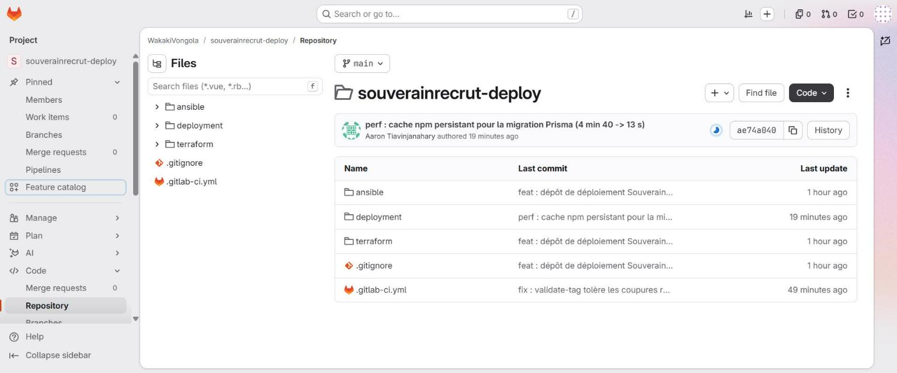
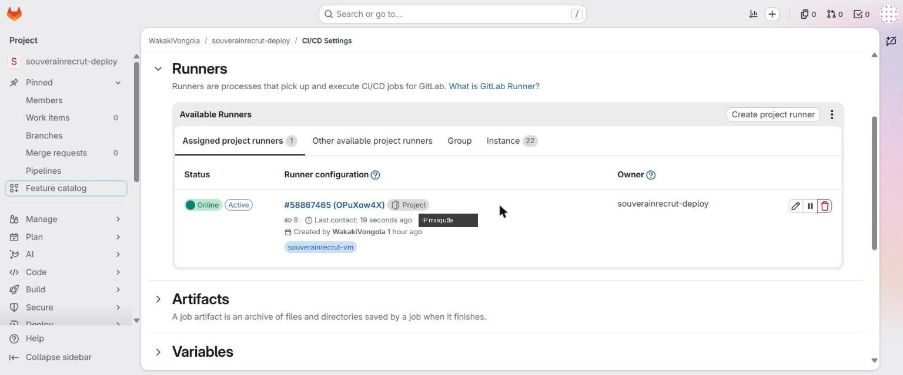
souverainrecrut-vm : en ligne, actif, dernier contact il y a quelques secondes (adresse IP masquée).Six variables alimentent le pipeline. Toutes sont Protected (disponibles seulement sur la branche protégée) ; les deux secrets applicatifs sont Masked. La clé SSH est de type File, ce qui évite qu'elle apparaisse dans un journal. Aucun jeton Docker Hub n'est défini : l'image est publique, et le pipeline n'exécute docker login (jeton par l'entrée standard, docker logout garanti) que si une variable DOCKERHUB_TOKEN existe.
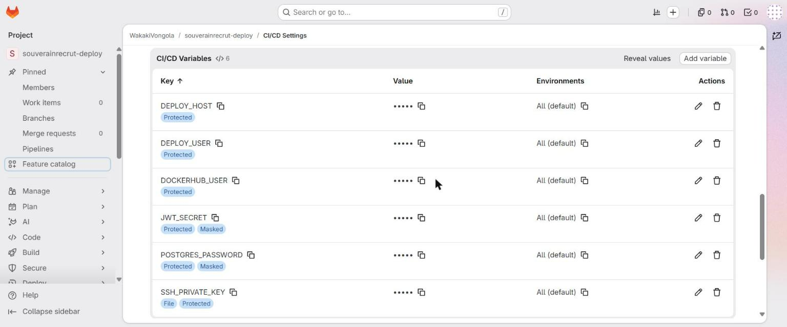
•••••, secrets « Masked », clé SSH de type « File », toutes « Protected ».| Job | Déclenchement | Rôle |
|---|---|---|
validate-tag | automatique | vérifie le format X.Y.Z-sha7 (jamais latest) et l'existence du tag sur Docker Hub (5 tentatives) |
deploy-production | manuel (when: manual) | copie les fichiers en SSH, reconstruit le .env depuis les variables, lance deploy.sh |
smoke-test | automatique après le déploiement | teste /v1/health et /v1/ready, compare l'image en production au tag demandé |
rollback-production | manuel | redéploie PREVIOUS_TAG et revérifie l'API |
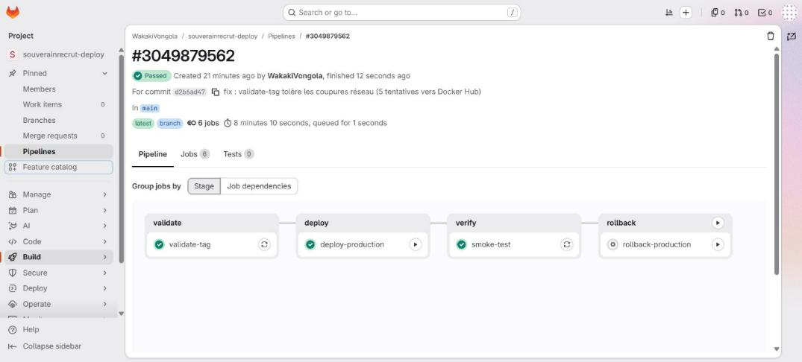
validate-tag, deploy-production (approuvé) et smoke-test réussis ; le rollback reste disponible.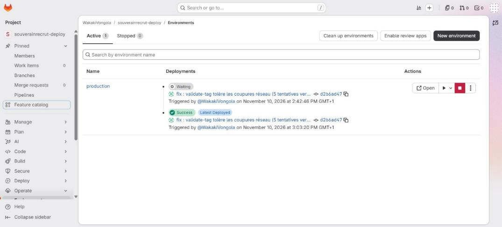
@WakakiVongola avec date et commit : c'est la trace d'audit de l'approbation. L'entrée « Waiting » est un pipeline ultérieur (commit ae74a040) dont personne n'a approuvé le déploiement : il n'est donc pas parti en production.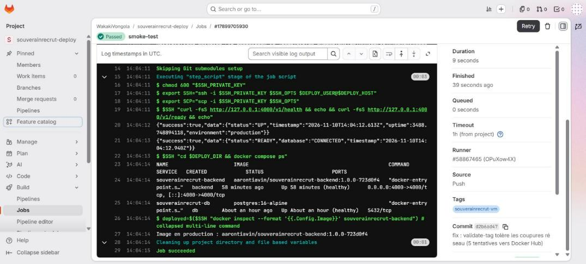
smoke-test : API UP et READY, conteneurs healthy, image en production égale au tag demandé.Après déploiement, l'API est interrogée depuis le poste hôte (donc à travers le réseau et le pare-feu), et non depuis la VM. Une requête sans jeton doit être refusée : l'authentification est bien active en production.
GET /v1/health -> {"success":true,"data":{"status":"UP","environment":"production"}}
GET /v1/ready -> {"success":true,"data":{"status":"READY","database":"CONNECTED"}}
GET /v1/candidates (sans jeton) -> HTTP 401
souverainrecrut-backend aarontiavin/souverainrecrut-backend:1.0.0-723d0f4 Up (healthy) 0.0.0.0:4000->4000/tcp
souverainrecrut-db postgres:16-alpine Up (healthy) 5432/tcpLa persistance a été vérifiée en créant un candidat par l'API, puis en arrêtant et redémarrant toute la pile : la donnée est toujours là, car PostgreSQL écrit dans un volume Docker nommé.
Chaque déploiement mémorise le tag précédent. Le retour arrière redéploie une image déjà publiée et déjà validée par la chaîne : aucune reconstruction, donc rapide et sûr.
| Étape | Image en production | /v1/ready | Candidats en base |
|---|---|---|---|
| 1. Déploiement initial | 1.0.0-723d0f4 | READY | 1 (créé par l'API) |
2. ./rollback.sh 1.0.0-12a585b | 1.0.0-12a585b | READY | 1 |
3. ./rollback.sh 1.0.0-723d0f4 | 1.0.0-723d0f4 | READY | 1 |
### AVANT : IMAGE_TAG=1.0.0-723d0f4
==> Rollback vers 1.0.0-12a585b
Tag précédent sauvegardé : 1.0.0-723d0f4
==> Pull aarontiavin/souverainrecrut-backend:1.0.0-12a585b
==> Vérification
OK : aarontiavin/souverainrecrut-backend:1.0.0-12a585b déployée et prête.
### APRES : IMAGE_TAG=1.0.0-12a585b | précédent=1.0.0-723d0f4
{"success":true,"data":{"status":"READY","database":"CONNECTED"}}deploy.sh rechargeait le fichier .env et écrasait le tag demandé. Corrigé (un tag passé en argument prime) puis rejoué avec succès. Sans ce test, la procédure documentée n'aurait pas fonctionné en situation réelle.Le rollback applicatif ne défait pas les migrations Prisma. Pour qu'un retour arrière reste possible, les migrations doivent rester additives : nouvelle colonne nullable ou nouvelle table (ignorées par la version précédente), et jamais de renommage ni de suppression en une seule release (procéder en deux temps : expand puis contract). Une sauvegarde pg_dump précède toute migration risquée. État actuel : une seule migration, commune à toutes les versions publiées, donc aucun risque de schéma.
Pour chaque déploiement, le cours demande de pouvoir retrouver le commit, le résultat du Quality Gate, le digest de l'image et l'approbation. Le digest est la pièce maîtresse : c'est l'empreinte de l'image, impossible à falsifier sans changer sa valeur.
| Élément à conserver | Valeur pour le déploiement de référence | Où le retrouver | |
|---|---|---|---|
| Commit et auteur | 723d0f4 · Aaron-kun · 10/11 10:14 | GitHub, historique de Dev | ✅ |
| Résultat du Quality Gate | Passed · 151 tests · 0 CRITICAL | Jenkins build #11, Figure 9 | ✅ |
| Digest de l'image | sha256:0b9848d00e9d21685eb0419dc9ccfe2a29a06fa18a26f0b86f7f034ed4e7773a | console Jenkins ; Figure 19 | ✅ |
| Approbation : qui, quand | WakakiVongola · 10/11/2026 15:03 | GitLab → Environnements, Figure 25 | ✅ |
| Inventaire des composants (SBOM) | non produit | perspective § 14 | ❌ |
| Signature de l'image | non réalisée | perspective § 14 | ❌ |
| Secret | Où il est stocké | Protection |
|---|---|---|
| Jeton SonarQube, accès Docker Hub | credentials Jenkins | injectés à l'exécution, masqués dans les logs |
| Mot de passe PostgreSQL, clé de signature JWT | variables GitLab Masked + .env du serveur | fichier en mode 0600, reconstruit par le pipeline, jamais commité |
| Clé SSH de déploiement | variable GitLab de type File | chemin temporaire effacé en fin de job |
| Jetons d'accès GitLab et GitHub | poste de l'étudiant, hors dépôt | jamais écrits dans .git/config |
Autres mesures : image non-root sans outils de build, pare-feu deny par défaut (seuls 22 et 4000 ouverts), PostgreSQL non exposé sur l'hôte, .gitignore sur .env, *.tfvars, *.tfstate et clés, balayage des secrets avant chaque commit.
SSH_PRIVATE_KEY avait été créée en type Variable et non File. La commande chmod 600 "$SSH_PRIVATE_KEY" a reçu le contenu de la clé comme argument, a échoué, et son message d'erreur a recopié la clé dans le journal du job. Le projet étant privé et à membre unique, l'exposition est restée limitée.| Étape | Action |
|---|---|
| Détection | relecture du journal du job en échec |
| Correction | variable recréée en type File : le pipeline suivant ne laisse plus rien apparaître |
| Nettoyage | les deux journaux concernés ont été effacés (« Job has been successfully erased ») |
| Décision | clé conservée (projet pédagogique) ; en production réelle : rotation de la clé et retrait de l'ancienne sur le serveur |
Leçon. Un secret sur plusieurs lignes ne peut pas être masqué par GitLab ; seul le type File garantit qu'il ne s'affiche pas. C'est désormais écrit dans la procédure de déploiement.
La revue de la suite de tests a révélé des défauts du dépôt de référence. Le périmètre interdit de modifier backend/src/ : ils sont donc tracés, pas corrigés. Chacun est décrit par un test marqué it.failing : le test exprime le comportement attendu, échoue aujourd'hui (donc compte comme réussi), et fera échouer le pipeline le jour où le défaut sera corrigé sans mise à jour du test.
| # | Défaut | Gravité | Comportement attendu |
|---|---|---|---|
| D1 | PUT /users/:id avec un mot de passe : stocké en clair (pas de hachage à la mise à jour) | Critique | hachage bcrypt, comme à la création |
| D2 | GET /users et /users/:id renvoient le hash bcrypt des utilisateurs | Haute | champ password absent de la réponse |
| D3 | POST /auth/login sans validation : corps vide → erreur 401 au lieu de 400 | Moyenne | validation Zod → 400 |
| D4 | ?page=abc donne skip: NaN puis une erreur serveur | Moyenne | repli sur la page 1 |
| D5 | Clé étrangère violée (P2003) non traduite → 500 | Moyenne | 400 ou 404 explicite |
| D6 | Un recruteur peut créer une offre au nom d'un autre (pas de contrôle de propriété) | Moyenne | 403, ou identifiant forcé à celui du jeton |
| D7 | Express annonce sa version (en-tête X-Powered-By) : information utile à un attaquant (SonarQube, sécurité) | Faible | app.disable('x-powered-by') ou Helmet |
| D8 | parseInt au lieu de Number.parseInt, deux occurrences dans pagination.ts (SonarQube, fiabilité) ; lié à D4 | Faible | Number.parseInt avec valeur par défaut |
Les défauts D7 et D8 sont les trois problèmes ouverts signalés par SonarQube (§ 4.2) : ils existent depuis la version de référence. Le Quality Gate ne porte que sur le nouveau code, qui n'en contient aucun : c'est pourquoi il reste « Passed ».
Quatre builds ont échoué avant la stabilisation (#5 à #8), chacun révélant un vrai problème (voir § 11.3). La durée est ensuite passée de plus de 7 minutes à environ 70 secondes, en grande partie grâce aux caches (dépendances npm, couches Docker, base de vulnérabilités Trivy). Les quatre premiers builds ont été purgés par la rotation des historiques (10 conservés).
Dans le premier pipeline GitLab, la migration Prisma durait 4 min 40 s : la CLI était retéléchargée depuis npm à chaque déploiement. Un volume Docker conserve désormais son cache npm : la migration passe à 13 s (mesuré sur la VM), soit environ vingt fois plus vite.
| Phase | Incident | Cause racine | Leçon |
|---|---|---|---|
| CI | Aucun test exécuté, client Prisma absent | dépôt fourni sans configuration de tests ; scripts postinstall bloqués | prisma generate en étape dédiée |
| CI | Seuil de couverture ignoré | faute de frappe (coverageThresholds) | vérifier qu'une règle bloque réellement |
| CI | Mot de passe SonarQube perdu, webhook refusé | échappement du $ sous PowerShell ; réseau privé interdit par défaut | tester les commandes dans l'interpréteur cible |
| CI | Jenkins sans docker, Node ni Trivy | image officielle trop minimale | image Jenkins personnalisée et versionnée |
| CI | NullPointerException au checkout | skipDefaultCheckout ne définit pas GIT_COMMIT | lire le résultat de checkout scm |
| CI | Publication bloquée par 2 CVE CRITICAL | dépendance Express et npm embarqué dans l'image | le scan a joué son rôle de barrière |
| CI | Credential Docker Hub absent | oubli de configuration | journal d'étapes bloquantes (runbook) |
| Déploiement | Rollback vers la mauvaise version | .env écrasait le tag demandé | tester le retour arrière pour de vrai |
| Déploiement | Clé privée affichée dans un journal | variable de type Variable au lieu de File | voir § 9 |
| Déploiement | YAML refusé par GitLab | : dans une commande non quotée | valider dans l'éditeur de pipeline |
| Déploiement | Coupures réseau de la VM (curl code 56) | instabilité du NAT VMware | tentatives répétées, scripts idempotents |
Les quatre indicateurs DORA mesurent la performance d'une chaîne de livraison. Valeurs relevées sur les deux jours du projet (échantillon très court : ils illustrent la méthode, ils ne sont pas statistiquement significatifs).
| Indicateur | Valeur mesurée | Source |
|---|---|---|
| Fréquence de déploiement | 6 tentatives sur le serveur en une journée, dont 4 réussies | journaux de deploy.sh et GitLab |
| Délai de livraison (commit → image publiée) | ≈ 10 min (≤ 5 min d'attente du Poll SCM + 70 à 100 s de build) | Jenkins #13 et #14 |
| Délai image → production | pipeline GitLab de 3 à 8 min + délai d'approbation | GitLab |
| Taux d'échec des déploiements | 2 échecs sur 6 tentatives (33 %), tous deux détectés avant impact durable | voir § 11.3 |
| Temps de restauration | 2 à 4 min (retour à la version précédente, téléchargement compris) | Figure 29 |
| Critère | État |
|---|---|
| Le pipeline Jenkins est vert (tests, Quality Gate, Trivy) | ✅ builds #9 à #14 |
| L'image est publiée avec un tag traçable | ✅ 1.0.0-sha7 |
| Le déploiement est approuvé et tracé | ✅ Figure 25 |
| Le service est vérifié après déploiement | ✅ Figure 26 |
| Un retour arrière est documenté et testé | ✅ § 7 |
| La documentation est à jour | ✅ annexe A |
| Sans automatisation | Avec la chaîne mise en place |
|---|---|
| Tests, analyse, build et publication lancés à la main, dans un ordre variable | un Jenkinsfile exécute toujours les mêmes dix étapes, à chaque commit |
| Une faille peut atteindre le registre sans que personne ne la voie | deux publications ont été bloquées par Trivy avant d'exister |
| Build de plus de 7 minutes, résultat à interpréter | 70 à 100 secondes, verdict binaire, rapports archivés |
| Version déployée difficile à relier au code | tag version-sha et digest vérifiable |
| Critère | Argument | Preuve |
|---|---|---|
| Choix d'outils justifiés | chaque outil répond à une exigence du cahier ; les écarts sont expliqués (§ 3, § 14) | tableau des outils |
| Déploiement fiable | image unique testée puis déployée telle quelle ; vérification automatique après déploiement | Figure 30, Figure 26 |
| Déploiement réversible | rollback joué sur trois versions, données conservées, limites de schéma documentées | Figure 28 |
| Preuves de conformité | audit trail, approbation tracée, journaux et rapports archivés | Figure 25, annexe A |
| Écart | Raison | Impact |
|---|---|---|
| Ubuntu 22.04 au lieu de 24.04 | VM mise à disposition | aucun sur Docker, Compose ou Ansible |
| Terraform ne crée pas la VM | VMware Workstation sans ESXi/vCenter (prévu au § 4.2 du cahier) | Terraform contrôle le serveur et génère l'inventaire |
| Pas de HTTPS | environnement de laboratoire | API en HTTP sur réseau local ; reverse proxy TLS à ajouter |
| Pas d'environnement de staging | non exigé par le cahier | un seul environnement, protégé par l'approbation manuelle |
| Pas de jeton Docker Hub dans GitLab (§ 4.4) | image publique : le pull anonyme suffit ; un secret de moins à gérer | le pipeline fait le docker login dès qu'une variable DOCKERHUB_TOKEN est ajoutée (nécessaire si l'image devient privée) |
| Élément | Pourquoi | Comment l'ajouter |
|---|---|---|
| SBOM (inventaire des composants) | option du cours, non exigée par le cahier | étape Jenkins syft scan + archivage du fichier CycloneDX |
Signature d'image (cosign) | option du cours | signer après le push, vérifier avant le déploiement |
Tests de charge (k6) | option du cours | étape optionnelle après le smoke-test |
| Tests d'intégration sur un vrai PostgreSQL | la suite simule la base | PostgreSQL éphémère dans le pipeline Jenkins |
| Amélioration | Intérêt |
|---|---|
| Déclencher le pipeline GitLab depuis Jenkins (API de déclenchement) en gardant l'approbation manuelle | « du commit à la production en un clic » |
| Environnement protégé GitLab, approbateurs restreints | limiter qui peut mettre en production |
| Renouvellement périodique de la clé SSH et des jetons | réduire l'exposition des secrets |
| Corriger les défauts D1 à D8 dans le code applicatif | fermer les failles identifiées au § 10 |
Le livrable est assemblé dans l'arborescence du cahier (§ 6) par livrable/assembler-livrable.py, qui refuse de produire l'archive s'il détecte un jeton, une clé privée ou une adresse IP publique. Archive : SouverainRecrut-CICD.zip (84 fichiers).
SouverainRecrut-CICD/
├── README.md ← point d'entrée + correspondance avec les chemins du dépôt GitHub
├── integration-continue/ ← Jour 1
│ ├── Jenkinsfile · Dockerfile · .dockerignore · README.md · etapes-bloquantes.md (runbook)
│ ├── sonar/ sonar-project.properties
│ ├── tests/ jest.config.js · tests/ (18 suites) · export-openapi.ts
│ ├── stack-ci/ docker-compose.yml (Jenkins, SonarQube) · jenkins/Dockerfile
│ ├── reports/ JUnit · lcov · Trivy · OpenAPI + doc HTML · console Jenkins · preuves de déploiement
│ └── captures/ 19 captures d'écran
├── deploiement/ ← Jour 2
│ ├── terraform/ providers.tf · main.tf · variables.tf · outputs.tf · README.md
│ ├── ansible/ inventory.ini · playbook.yml · run-ansible.ps1
│ ├── deployment/ docker-compose.yml · .env.example · deploy.sh · rollback.sh
│ ├── .gitlab-ci.yml
│ └── README.md
└── documentation/ architecture.md · procedure-deploiement.md · procedure-rollback.md
rapport-final.md · rapport/rapport-final.pdf · suivi-livrables.md
cd deploiement/terraform && cp terraform.tfvars.example terraform.tfvars # adapter vm_ip, ssh_user
terraform init && terraform validate && terraform plan && terraform apply # (dans l'image hashicorp/terraform)
powershell -ExecutionPolicy Bypass -File deploiement\ansible\run-ansible.ps1 --nopass --check --diff
powershell -ExecutionPolicy Bypass -File deploiement\ansible\run-ansible.ps1 --nopass
# GitLab : créer le runner (tag souverainrecrut-vm), les 6 variables, puis Build > Pipelines > New pipeline
# Approuver deploy-production (▶), vérifier smoke-test
curl http://<ip>:4000/v1/ready # {"status":"READY","database":"CONNECTED"}
ssh <user>@<ip> "cd /opt/souverainrecrut && ./rollback.sh 1.0.0-12a585b" # retour arrière
| Terme | Définition |
|---|---|
| CI / intégration continue | chaque commit est compilé et testé automatiquement |
| Livraison continue | l'artefact est toujours prêt à déployer ; la mise en production est validée par un humain |
| Déploiement continu | chaque changement validé part en production sans intervention |
| Quality Gate | règles de qualité (couverture, vulnérabilités, duplications) dont l'échec bloque le pipeline |
| Trivy | outil qui détecte les vulnérabilités d'une image Docker |
| Tag / digest | le tag est un nom lisible (1.0.0-723d0f4) ; le digest est l'empreinte unique du contenu de l'image |
| Runner | programme qui exécute les jobs d'un pipeline GitLab |
| Idempotent | qu'on peut rejouer sans effet de bord : le second passage ne change rien |
| Rollback | retour à une version précédente |
| SBOM | Software Bill of Materials : liste des composants d'un logiciel |
| DORA | quatre indicateurs de performance de la livraison logicielle |
--severity CRITICAL --ignore-unfixed --exit-code 1) : 0 vulnérabilité sur l'image Alpine et ses dépendances, donc la publication est autorisée.1.0.0-723d0f4 (la version en production) : son index digest sha256:0b9848d0…7773a est celui affiché par Jenkins au push et par la VM au déploiement.aarontiavin/******).deploy.sh, appelé aussi par le pipeline GitLab.souverainrecrut-vm : en ligne, actif, dernier contact il y a quelques secondes (adresse IP masquée).•••••, secrets « Masked », clé SSH de type « File », toutes « Protected ».validate-tag, deploy-production (approuvé) et smoke-test réussis ; le rollback reste disponible.@WakakiVongola avec date et commit : c'est la trace d'audit de l'approbation. L'entrée « Waiting » est un pipeline ultérieur (commit ae74a040) dont personne n'a approuvé le déploiement : il n'est donc pas parti en production.smoke-test : API UP et READY, conteneurs healthy, image en production égale au tag demandé.